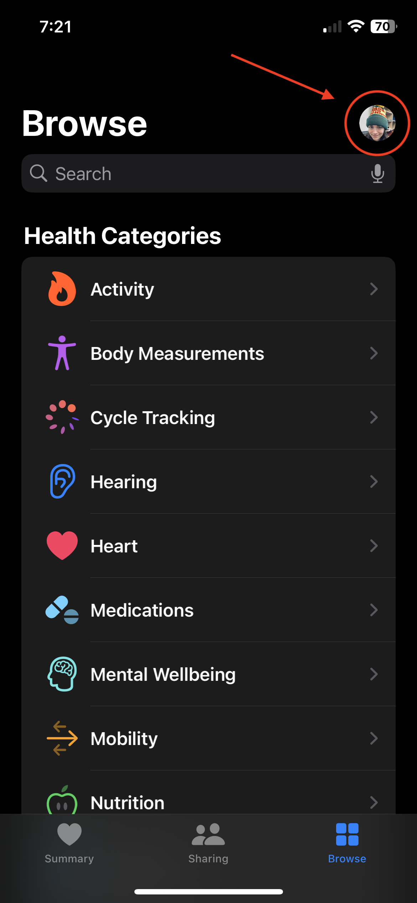
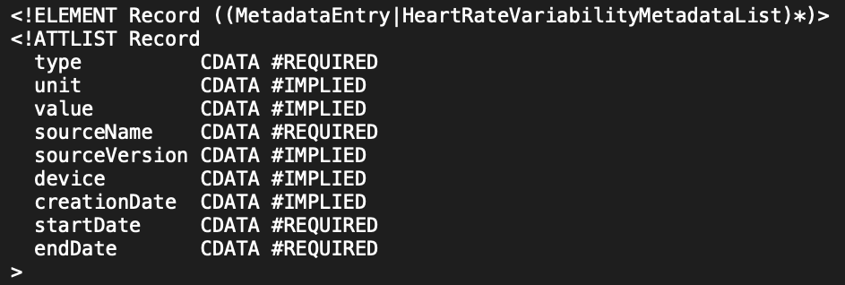
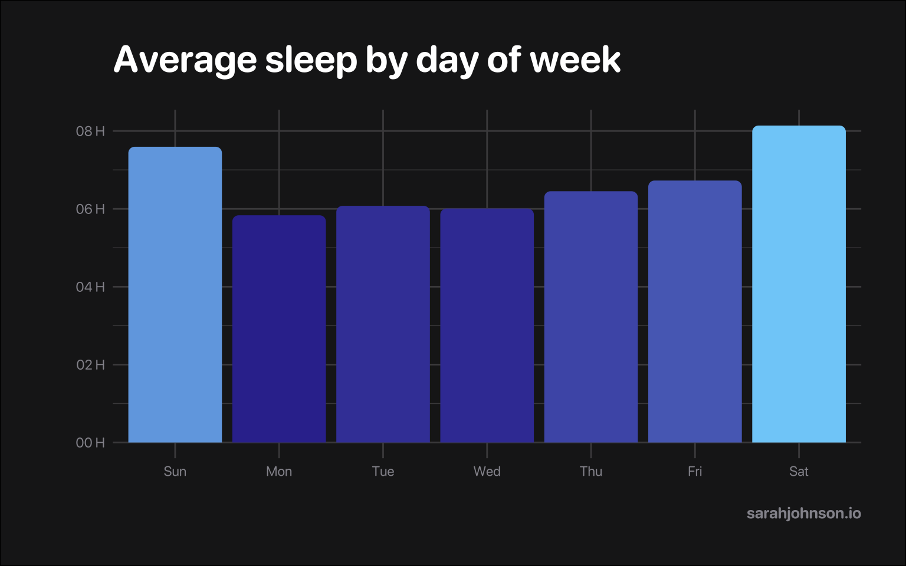
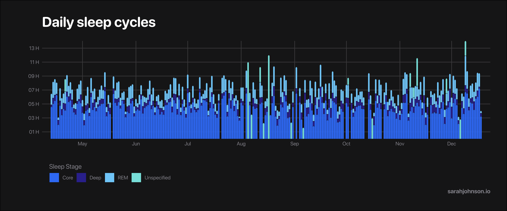
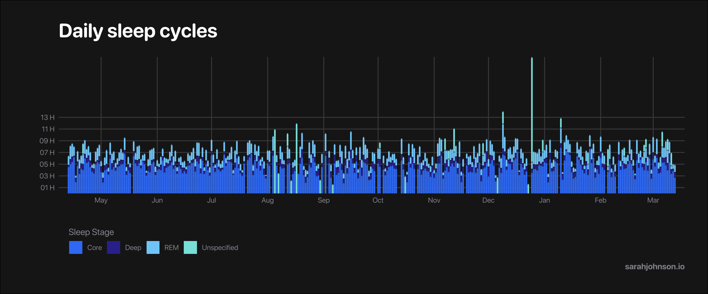
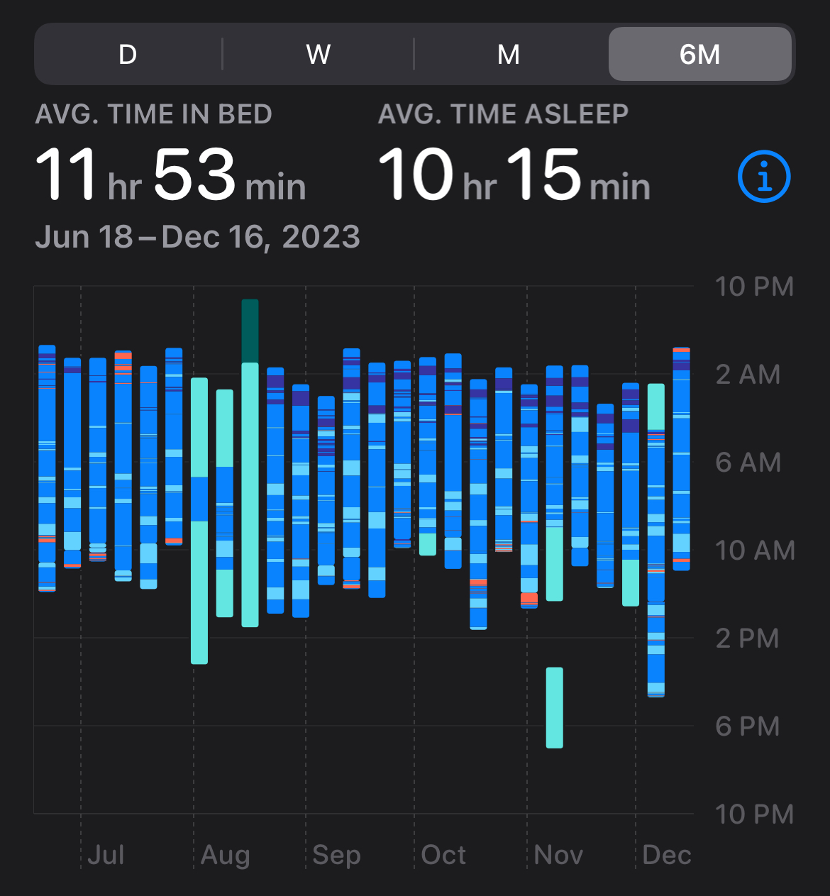
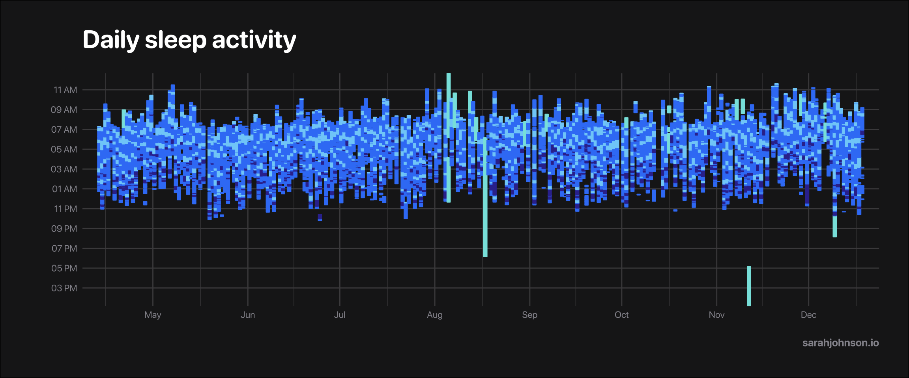

# install.packages(c("tidyverse", "arrow"))
library(tidyverse)
library(xml2)
library(arrow) # optionalAnalyze Apple Health sleep data with R
I’ve always struggled with falling asleep early, so I purchased an Apple Watch to monitor my sleep. This post details how to access your Apple Health data and analyze it.
Export your Health data
Unfortunately I could not find a direct way to access the health data, but you can export it from your profile in the Apple Health app.

Note that this exports all of your health data, so it will likely be a large file.
The export is a zipped folder, which I airdropped to my Mac and unzipped. The file that contains all your data is export.xml.
Convert XML to a table
We can use the xml2 package to access this data in R. First, load your libraries.
xml2 is included in the tidyverse and does not need to be installed separately. I use the arrow package to save the cleaned data as parquet files because they take up less space than csv files and load faster.
Read the XML file
First, read the xml file using the xml2::read_xml() function.
xml <- read_xml("/Users/JaneDoe/Data/apple_health_export/export.xml")This file is large and takes up a lot of memory, so let’s narrow down to the information we need and export the data to something easier to work with.
Access health records
There’s some valuable information at the top of the xml document on what tables are included in the file and related metadata. This post will focus on the Record table, but other data available includes Activity Summary, Workout, Clinical Record, and more.
Below are the attributes for the Records data, which we will turn into columns.

Use xml_find_all("//Record") to narrow the xml document to just your health records.
xml_records <- xml |> xml_find_all("//Record")
col_names <- c("type", "sourceName", "sourceVersion", "creationDate", "startDate", "endDate", "value", "unit")Create a col_names vector to list which information you want to pull from each element.
XML attribute data to table
Converting data from an XML document to a table is a learning experience. I attempted to use Taras Kaduk’s method of using XML::xmlAttrsToDataFrame() function, only to find the function no longer exists. When I tried using XML::xmlToDataFrame(), the process took so long I was worried R would hang.
Instead, I created an xml_to_tibble() function to gather this data.1
attr_to_col <- function(xml, attr_cols) {
as_tibble_col(xml_attr(xml, attr_cols), column_name = attr_cols)
}
xml_to_tibble <- function(xml_data, attr_cols) {
map(attr_cols, ~ {attr_to_col(xml_data, .x)}) |> list_cbind()
}First, the attr_to_col() function pulls attribute data from each xml element. This data is placed in a column; the length of the column will be the same as the number of records in the xml data. Attributes missing from an element will have a value of NA.
The xml_to_tibble() function runs the above function for each attribute defined in col_names. Then, all the columns are binded together into one table.
records <- xml_to_tibble(xml_records, col_names)Clean up your records table by converting date columns and making some values more legible.
records <- records |>
mutate(
# convert date columns; adjust to your timezone
across(ends_with("Date"), ~ as_datetime(.x) |> with_tz("US/Central")),
# clean up type & value columns to be more readable
type = str_remove_all(type, "HK(Category|Quantity)TypeIdentifier"),
value = str_remove_all(value, "HKCategoryValue(SleepAnalysis)?")
)Note this changes all date columns to US/Central timezone; excluding the timezone adjustment keeps all data in UTC time. I might adjust my code in the future to use the local timezone of wherever the data was collected.
Narrow for sleep data
The records table contains a lot of information. You can use unique(records$type) to see all available data2, but this post will focus on sleep data.
sleep_data <- records |>
filter(type == "SleepAnalysis") |>
select(-c(type, unit))Now that we have the XML data in tables, let’s save it in a different format so it’s easier to manage.
Save data
Save the data with write_parquet() or write_csv().
# save data as parquet (requires arrow package)
write_parquet(records, paste0(path, "health/records.parquet"))
write_parquet(sleep_data, paste0(path, "health/sleep.parquet"))
# alt: save as a csv file (larger file size)
write_csv(sleep_data, paste0(path, "health/sleep.csv"))
write_csv(records, paste0(path, "health/health.csv"))Congratulations! You now have all your health records saved in an easy format.
Analyze your sleep data
To access the data again, just use read_parquet(). I also want to filter to only use my watch data.
sleep_data <- read_parquet(paste0(path, "health/sleep.parquet")) |>
filter(str_detect(sourceName, "Watch"))
glimpse(sleep_data)Rows: 8,720
Columns: 6
$ sourceName <chr> "Sarah’s Apple Watch", "Sarah’s Apple Watch", "Sarah’s A…
$ sourceVersion <chr> "9.3.1", "9.3.1", "9.3.1", "9.3.1", "9.3.1", "9.3.1", "9…
$ creationDate <dttm> 2023-04-13 07:39:19, 2023-04-13 07:39:19, 2023-04-13 07…
$ startDate <dttm> 2023-04-13 01:04:04, 2023-04-13 01:04:04, 2023-04-13 01…
$ endDate <dttm> 2023-04-13 01:26:04, 2023-04-13 01:26:04, 2023-04-13 01…
$ value <chr> "AsleepCore", "InBed", "Awake", "AsleepCore", "AsleepDee…The value column shows what type of sleep activity was recorded. The startDate and endDate details when the activity took place. The creationDate is linked to a group of sleep activity, like one night’s worth of sleep.
This post will focus on rows where I’m asleep, so let’s filter for that. All of these rows will start with “Asleep” in the value column.
asleep <- sleep_data |>
filter(str_detect(value, "Asleep")) |>
mutate(value = str_remove(value, "Asleep"),
creationDate = date(creationDate)) |>
select(-starts_with("source"))
head(asleep)# A tibble: 6 × 4
creationDate startDate endDate value
<date> <dttm> <dttm> <chr>
1 2023-04-13 2023-04-13 01:04:04 2023-04-13 01:26:04 Core
2 2023-04-13 2023-04-13 01:27:04 2023-04-13 01:43:34 Core
3 2023-04-13 2023-04-13 01:43:34 2023-04-13 01:45:34 Deep
4 2023-04-13 2023-04-13 01:45:34 2023-04-13 02:01:34 Core
5 2023-04-13 2023-04-13 02:01:34 2023-04-13 02:10:34 REM
6 2023-04-13 2023-04-13 02:10:34 2023-04-13 02:29:34 Core I also changed the creationDate to remove the time for easier future use.
I’ll be using the following theming options for my plots.
sleep_colors <- c(
"REM" = "#80CFF9",
"Core" = "#3A81F6",
"Deep" = "#35339C",
"Unspecified" = "#87E3E0"
)
sleep_theme <- theme(
plot.margin = margin(1.5, 1, 1, 1.25, "cm"),
plot.background = element_rect(fill = "#1C1B1D"),
panel.grid = element_line(color = "#4B4A4C"),
text = element_text(colour = "#94949B", family = "Helvetica"),
axis.title.y = element_text(vjust = 5),
axis.text = element_text(color = "#94949B"),
plot.title = element_text(colour = "white", vjust = 5)
)The colors for the sleep stages were pulled from Apple’s Health data app.
Sleep by Day of Week
How much sleep do I average for each night of the week?
sleep_by_wday <- asleep |>
mutate(activity_amount = endDate - startDate) |>
summarise(daily_sleep = sum(activity_amount), .by = creationDate) |>
mutate(wday = wday(creationDate, label = TRUE)) |>
summarise(wday_sleep = mean(daily_sleep), .by = wday)
# mutate(readable = seconds_to_period(wday_sleep))Get the amount of sleep for that row by subtracting the endDate by the startDate. Add up the sleep activity for each night by grouping by the creationDate.
Then, use lubridate::wday() function to get the day of the week. Finally, find the average amount of sleep for each weekday. The total will be given in seconds; turn this into a readable format with seconds_to_period().
Turn the table into a graph with ggplot’s geom_col().
sleep_by_wday |>
ggplot() +
geom_col(aes(
x = wday,
y = wday_sleep,
fill = as.numeric(wday_sleep)
)) +
scale_y_time(labels = scales::label_time(format = "%H")) +
scale_fill_continuous() +
theme_minimal() +
labs(title = "Average sleep by day of week",
y = "Hours Asleep", x = "",
caption = "sarahjohnson.io") +
theme(legend.position = "none") +
sleep_theme
Unsurprisingly, I get the most sleep on Saturdays where I average just over 8 hours, followed by Sunday with 7.5 hours. All weekdays I average below 7 hours of sleep, with Monday and Wednesday averaging under 6 hours (5H 50M and 5H 57M, respectively).
Sleep Cycle Amounts
How much of each sleep cycle do I experience each night?
cycle_by_day <- asleep |>
mutate(cycle_amount = endDate - startDate) |>
summarise(cycle_amount = sum(cycle_amount),
.by = c("creationDate", "value"))Again get the amount of sleep activity for each row and sum the amounts. This time we will also group by the value column which defines the type of sleep activity.


cycle_by_day |>
ggplot() +
geom_col(aes(x = creationDate, y = cycle_amount, fill = value),
# position = "fill"
) +
geom_vline(aes(xintercept = as_date("2023-5-17")), color = "pink", linewidth = .5) +
geom_vline(aes(xintercept = as_date("2023-8-1")), color = "pink", linewidth = .5) +
scale_fill_manual(values = sleep_colors) +
scale_y_time(expand = c(0, 0),
breaks = seq(3600, 43200, by = 3600),
minor_breaks = NULL,
labels = scales::label_time(format = "%HH")) +
scale_x_date(expand = c(0, 5),
breaks = "1 month",
minor_breaks = NULL,
date_labels = "%b") +
theme_minimal() +
labs(
title = "Sleep cycle amounts by day",
x = "",
y = "",
fill = "Sleep Stage",
caption = "sarahjohnson.io"
) +
theme(legend.position = "bottom",
legend.box.margin = margin(.25, 4.5, 0, 0, unit = "cm")) +
sleep_themeSleep Cycle Activity
How do I make a sleep graph similar to the one in Apple’s Health app?

I’ve always wanted to view the sleep cycle for all days at once. However, the graph needs some adjustments to plot correctly.
If you attempt to use the startDate or endDate on the y-axis, the dates will prevent the times from aligning. The result is a bunch of very short lines stacking diagonally into oblivion. Use hms::as_hms() to pull just the time.3
cycle_activity <- asleep |>
mutate(start_time = hms::as_hms(startDate),
end_time = hms::as_hms(endDate)) |>
mutate(across(ends_with("_time"), ~ ifelse(
as.numeric(hour(.x)) > 12,
.x - hms::hms(0, 0, 24),
.x
) |> hms::as_hms()))The next problem I ran into was that sleep starts on one night and ends on the next. If you do not adjust the hours and y-axis, you’ll have a disjoined graph. Assuming a normal sleep schedule, a bit of the data will be at the bottom (for hours slept between ~10PM/22:00 to midnight) and a large amount towards the bottom (for midnight/00:00 to wake-up), and there will be a large gap of no data in the middle for hours you are awake.
To correct for this, I decided to alter the value for any time with an hour value greater than 12. Since I was working with a 24-hour time, I subtracted 24 from the hour value, resulting in a negative time. For instance, 11:58PM/23:58 became -00:02.
In your graph, you’ll still need to adjust the axis breaks to something like seq(-7200, 43200, by = 3600), which would show breaks at every hour (3600 seconds) from 10PM (-7200) to noon (43200). Thankfully ggplot’s labelling automatically turns these negative times into values like “11PM” or “23:00”.
Lastly, I wanted to see my typical wake and sleep times, but with the day-to-day variances smoothed out.
sleep_start <- cycle_activity |>
slice_min(start_time, by = "creationDate")
sleep_end <- cycle_activity |>
slice_max(end_time, by = "creationDate")To get this data, just slice your earliest and latest sleep time for each day.


ggplot() +
geom_rect(
data = cycle_activity,
aes(
xmin = creationDate,
xmax = creationDate + days(1),
ymin = start_time,
ymax = end_time,
color = value,
fill = value
)
) +
geom_smooth(data = sleep_start, aes(x = creationDate, y = start_time)) +
geom_smooth(data = sleep_end, aes(x = creationDate, y = end_time)) +
scale_color_manual(values = sleep_colors,
aesthetics = c("colour", "fill")) +
scale_x_date(expand = c(0, 5),
breaks = "1 month",
date_labels = "%b") +
scale_y_time(expand = c(0, 0),
breaks = seq(-7200, 43200, by = 7200), # 3600 = 1H
minor_breaks = NULL,
labels = scales::label_time(format = "%I %p")) + # %H for 24-hour time
theme_minimal() +
labs(
x = "",
y = "Time",
title = "Sleep activity by day",
caption = "sarahjohnson.io"
) +
theme(legend.position = "none") +
sleep_themeAcknowledgments
Inspiration for this post from Jon Busby’s blog, who used Python to access this data.
Footnotes
This function was inspired by previous XML data wrangling functions I’d created for my Mario Kart speedrunning R package,
mk8dx, specifically themk_lss()function.↩︎Taras Kaduk’s blog post also shows other data available for analysis.↩︎
lubridate::hms()is used for time periods, like a race that takes 3H 42M 6S.↩︎